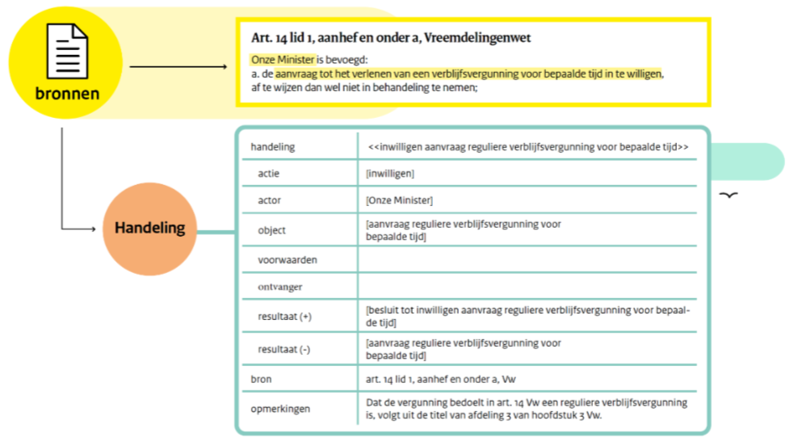

Voorbeelden; Calculemus-Flint
Artikel 14, eerste lid, onderdeel a, Vreemdelingenwet
Artikel 14, eerste lid, onderdeel a, Vreemdelingenwet luidt:
1. Onze Minister is bevoegd:
a. de aanvraag tot het verlenen van een verblijfsvergunning voor bepaalde tijd in te willigen, af te wijzen dan wel niet in behandeling te nemen; Het onderdeel (de brontekst) bevat drie handelingen: het inwilligen, het afwijzen en het niet in behandeling nemen van een aanvraag tot het verlenen van een verblijfsvergunning. Hieronder is het frame van de handeling inwilligen aanvraag reguliere verblijfsvergunning voor bepaalde tijd uitgewerkt.3
(Komt bovenstaande figuur u niet bekend voor? Kijk dan bij Analyseschema > Calculemus-Flint)
De actie, de actor en het object in het frame van de handeling kunnen worden gevuld. De voorwaarden en de ontvanger ontbreken in deze zin. Om deze elementen van de handeling te kunnen vullen, moeten bronnen worden gevonden. In dit geval zijn dat respectievelijk artikel 26, eerste lid en artikel 8 aanhef en onder a, Vreemdelingenwet.
Aandachtspunten bij deze interpretatie zijn:
- Artikel 14 heeft alleen betrekking op aanvragen voor reguliere verblijfsvergunningen. Dit volgt uit het opschrift van de afdeling waar artikel 14 toe behoort. In de tekst zelf zie je dat niet, maar we nemen het wel op in het frame, want het is een essentieel element.
- Dat het resultaat van het inwilligen is, dat een ‘besluit tot inwilligen van een aanvraag tot het verlenen van een reguliere verblijfsvergunning voor bepaalde tijd’ wordt gecreëerd, volgt uit artikel 1:3, eerste tot en met derde lid, Algemene wet bestuursrecht.
- Dat de ‘aanvraag tot het verlenen van een reguliere verblijfsvergunning voor bepaalde tijd’ verdwijnt door het inwilligen van de aanvraag volgt uit artikel 1:3, derde lid, Algemene wet bestuursrecht: er is voldaan aan het verzoek een besluit te nemen. Voor een juiste interpretatie van een norm moeten bij de analyse dus ook (impliciet) gerelateerde normen worden betrokken.
3 Dat het om een vergunning voor regulier verblijf gaat (en niet asiel bijvoorbeeld) blijkt uit de afdeling waarvan dit artikel onderdeel uitmaakt.